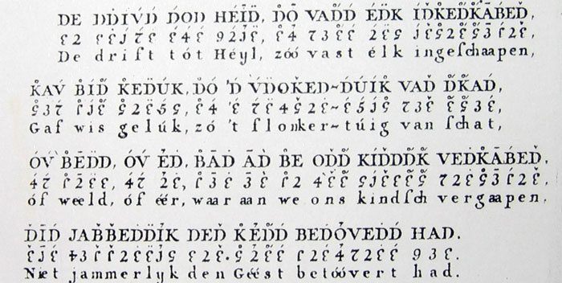

ИСТОРИЯ ФОНЕТИЧЕСКИХ ИССЛЕДОВАНИЙ
Рис.8. Транскрипция текста у Тен Кате;
первая строчка - запись с помощью транскрипции на основе латиницы;
вторая строчка - запись с помощью условных знаков;
третья строчка - орфографический текст
